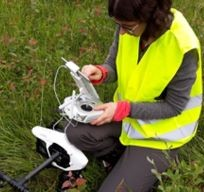
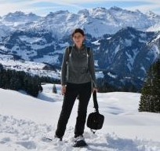

Background
Education
Academic Degrees
- 2007: PhD in the Earth Science within Geography Faculty of Biology and Earth Science, Jagiellonian University (Poland) Thesis: Spatiotemporal simulation of land cover change dynamics Institute of Geography and Spatial Management at the Jagiellonian University Award for outstanding PhD thesis within Geography defended between 2005 and 2007
- 2004: MSc in Physics (specialization: Nuclear Physics) Institute of Physics, Faculty of Physics, Astronomy and Applied Computer Science, Jagiellonian University (Poland) Thesis: Cross-sections of nucleus-proton fragmentation reactions
- 2002: MSc in Physical Geography within Environmental and Mathematical Studies (specialization: Geographic Information Systems) Institute of Geography and Spatial Management, Faculty of Biology and Earth Science, Jagiellonian University (Poland) Thesis: Spatial distribution of forests in the Western Beskidy Mountains Polish Geographical Society Award for outstanding MSc thesis

Certificates
2018: UAVO qualification certificate Civil Aviation Authority, Poland
2001-2002: Pedagogical training Teacher Training Center, Jagiellonian University (Poland)Work Experience

Details of my professional experience are available on my